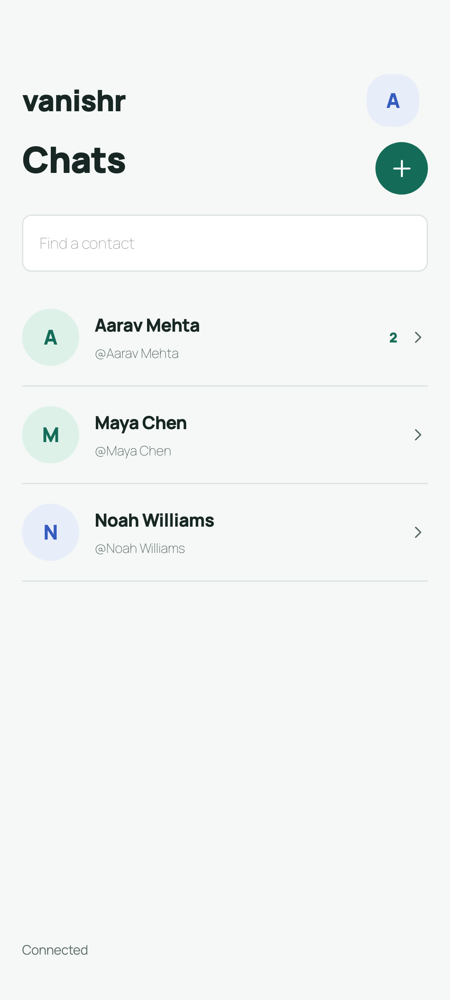

HOME, CHAT & PROFILES / THREE DIRECTIONS
More room. The same real options.
Three proposed home layouts, with menus checked against Android 0.3.0.
before the list, excluding system insets
Not live app screens. Menu labels and edit permissions match the Android code. Home filters, navigation placement, group icons and bottom sheets are design proposals. All names, messages, connection/read states and identity strings are fictional. No relay, encryption, real saving, sharing, notifications or update checks run here. Browser photo picking is not Android's camera flow.
Compact Classic
Familiar, with the duplicate heading removed.
Search First
Search and filters take the lead.
Bottom Actions
The quietest top, with thumb-level navigation.
What matches Android, and what is proposed

Option parity, not a screenshot replica
The duplicate Chats heading disappears in A, B and C. Search and new-conversation placement, filters, group icons and bottom-sheet presentation are proposed. The same chat and profile flows are used in all three, so the home layout is the main choice.
Chat menu: Profile, Contact identity, Disappearing messages, Remove contact. The composer includes Attach with Choose image and Take photo. Expiry choices are View once, 1 hour, 6 hours and 24 hours.
Contact profile: shared name, read-only username and one local Display name field. Save changes your nickname only. Cancel and Use profile name are included.
My profile: inline name/username saves, Share username, Verify identity, New message notifications, Check for updates, Licenses & source and Sign out with confirmation. Native/system actions stop at a clearly disclosed simulation.
Groups: Group info and expiry menu; owner-only invitation/removal/close, member leave, and verified-owner consent. New invitations stay pending and accepted members wait for the owner.
No list timestamps or delivery ticks are invented for the conversation list. Message ticks are fictional state samples. Long-press or right-click a message to inspect Delete; do the same on a contact row to inspect removal.
HTML pixel heights are illustrative; Android uses dp. Measurements exclude the simulated system bars. Reload or Reset samples restores all fictional data; nothing is persisted.